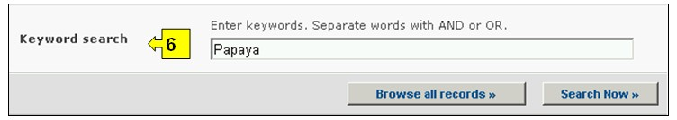

عنوان الموقع على الشبكة: http://bch.cbd.int/decisions/
موجب البروتوكول تعتبر الأطراف مسؤولة عن نشر المعلومات فيما يخص قراراتها وإعلاناتها في غرفة تبادل معلومات السلامة الأحيائية.
ويمكن النفاذ إلى أي بحث من أجل الحصول على معلومات حول قرارات البلدان وبلاغات أخرى من قائمة الاختيارات المنسدلة الخاصة بإيجاد المعلومات في شريط التصفح، أو من الوصلة في قائمة الاختيارات إلى اليسار في صفحة إيجاد المعلومات أو من وصلة في نص قرارات البلدان وبلاغات أخرى على نفس الصفحة.

صورة 29
وبفضل قاعدة البيانات هذه يتسنى للمستعملين البحث عن قرارات وغيرها من البلاغات التي تتصل بما يلي:
1. القرارات بشأن الكائنات الحية المحوَّرة بموجب الموافقة المسبقة عن علم؛
2. القرارات بشأن الكائنات الحية المحوَّرة فيما يتعلق بالأغذية، أو الأعلاف، أو؛
3. قرارات وإعلانات أخرى؛
4. تقارير تقييم المخاطرة.
وعلى صفحة البحث فيما يتعلق بقرارات البلدان وغيرها من البلاغات، يوجد ستة اطر معايير لتنقية عملية البحث في قاعدة البيانات. ولكل واحد منهم هنالك قائمة منسدلة تسمح باختيار المعايير المطلوبة. التركيب الاجمالي لقائمة الخيارات المنسدلة هي الفقرة الاولى على رأس قائمة الخانة. الزر الموجود على جهة اليمين من كل اطار يسمح للمستخدم بتفعيل عدة اختيارات. عندما يكون المستخدم في اسلوب الاختيارات المختلفة، من الممكن ان يضاف معايير مختلفة للاختيارات من خلال الضغط على المعيار المناسب والكبس على مفتاح (Ctrl).

صورة 30
الإطار 1 {اختيار بلد} يسرد جميع أسماء البلدان في قائمة اختيارات منسدلة، لكي يتسنى للمستعملين اختيار السجلات من بلد محدد.

صورة 31
الإطار 2 {اختيار مجموعة بلدان} يسرد مجموعات البلدان في قائمة اختيارات منسدلة ليتسنى للمستعملين اختيار مجموعة محددة من البلدان من أجل إجراء بحث. قائمة مجموعة البلدان تتضمن اهم المجموعات الجغرافية و السياسية للبلدان وتسمح لتضييق نطاق البحث بالسجلات المقدمة من قبل اعضاء المجموعة/المجموعات المختارة.

صورة 32
الإطار 3 { أنواع القرارات والإعلانات والإشعارات أو التقارير} يسرد أنواع القرارات والإعلانات والإشعارات أو التقارير المتاحة في قاعدة البيانات. وهذا يمكن استخدامه للمساعدة على تضييق نطاق الاختيار ليقتصر على القرارات أو الإبلاغ بشأن جوانب محددة من استخدام الكائنات الحية المحوَّرة.

صورة 33
الإطار 4 { أنواع الكائن الحي المحور} يسمح للمستعمل بتطبيق برنامج الترشيح لمختلف جوانب الكائن الحي المحور لتحديد عملية البحث وحصرها بالسجلات المتعلقة جزريا بالمعايير المطلوبة. فئات برنامج الترشيح هي التالية: (أ) كائنات حية محورة، تعرف عادة وفق المعرف الفريد (على سبيل المثال (MONØØ81Ø-6، (ب) السمات المدخلة والمحورة (على سبيل المثال Glyphosate tolerance)،(ج) اسم الجين (على سبيل المثال Cry 1A(b))، (د) التقنية المعتمدة (على سبيل المثال Agrobacterium mediated)، (ه) الاسم الشائع الابوي للكائن (على سبيل المثال الذرة)، (و) الاسم العلمي الابوي للكائن (على سبيل المثال Zea mays)، او (ز) مقدم الطلب (ادخال النص حر على سبيل المثال مونسانتو).
اخنيار معيار برنامج ترشيح او معايير في قائمة منسدلة يفتح اطارات بحث مرفقة بقائمة اختيارات منسدلة، كل واحدة منها ترتبط لواحد من معبار برنامج المصفاة. يمكن اضافة عدة مصفاة عبر استعمال زر (CTRL) (على سبيل المثال الضغط على معيار الترشيح المعني عند الضغط على زر (Ctrl.

صورة 34
الإطار 5 {تاريخ السجل} يسمح للمستعمل بأن يضيق نطاق البحث إلى التاريخ الذي أُدخل فيه السجل في قاعدة بيانات غرفة تبادل معلومات السلامة الأحيائية. وتعرض قائمة الاختيارات المنسدلة عدداً من الخيارات لتحديد البحث بالسجلات التي تم تقديمها بالمهلة الزمنية المحددة (على سبيل المثال "اليوم الفائت، الشهر الفائت، السنة الفائتة، الخ).

صورة 35
الإطار 6 {بحث الكلمة الدليلية} ايُعرض فرصة لاستخدام الكلمات الدليلية لتضييق نطاق البحث. ويستطيع المستعمل أن يستخدم تكوين جملة الكلمات الدليلية المعيارية (و/أو) للبحث مع استخدام عدة كلمات أو أجزاء أساسية من الكلمات (استيراد أو تصدير). البحث الذي يستخدم الكلمات الدليلية يصدر نتائج بالسجلات التي تتضمن النص الذي يتم البحث عنه فقط وليس المفردات التي لم يتم ادخالها (على سبيل البحث عن "الذرة" ينتج قائمة بالسجلات التي تحوي فقط كلمة "الذرة" ولكن ليس "Corn" أو "Zea mays").

صورة 36
وتوفر صفحة البحث ثلاثة ازرار لانتاج قائمة بالسجلات. لبدء إجراء البحث. ويسمح زرار للمستعمل بأن يشغّل بحثاً قائماً على معايير البحث المختارة في خانات آلية البحث. وتجئ نتائج البحث مرتبة أبجدياً وفقاً لأسم البلد. ويسمح اختيار تصفح جميع السجلات للمستعمل أن يحصل على قائمة بجميع السجلات المدونة في قاعدة البيانات هذه.
أما البحوث التي تحدد ما يزيد على 000 1 سجل فإنها تُختصر لتشمل مجرد الألف سجل الأولي التي يختارها البحث.

صورة 37
وتوجد لدى صفحات نتائج البحث آلية تصنيف أعلى قائمة السجلات. ويمكِّن استخدام هذه الآلية لتصنيف السجلات وفقاً للمعايير المحددة لتلك الفئة من المعلومات. ويلاحظ هنا أن المعايير تتغيَّر عندما يختار المستعمل معايير بحث مختلفة.

صورة 38
مثال. يرغب مستعمل في التعرف على جميع القرارات التي اتخذتها نيوزيلندا بمقتضى المادة 11 من البروتوكول. عليك أن تختار نيوزيلندا في إطار اختيار البلد (Selected country). وعليك أن تختار جميع القرارات المتخذة بمقتضى المادة 11 في إطار نوع القرار أو الإعلان أو الإخطار أو التقريـر. إضغط على زر إبحث الآن Search Now للتشغيل.
وتظهر نتائج البحث كقائمة بالسجلات. ويمكن مشاهدة المعلومات التفصيلية بشأن كل سجل باختيار عنوان القرار (بحروف داكنة زرقاء)

صورة 39

صورة 40